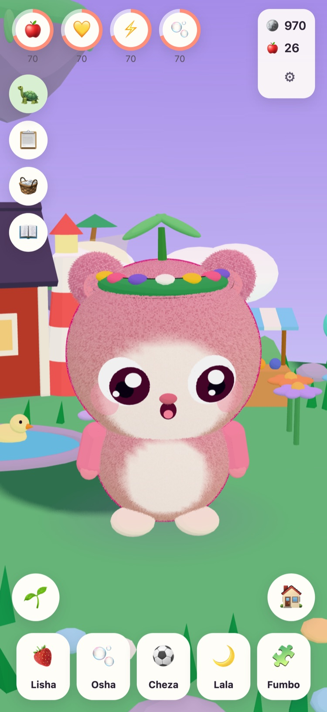
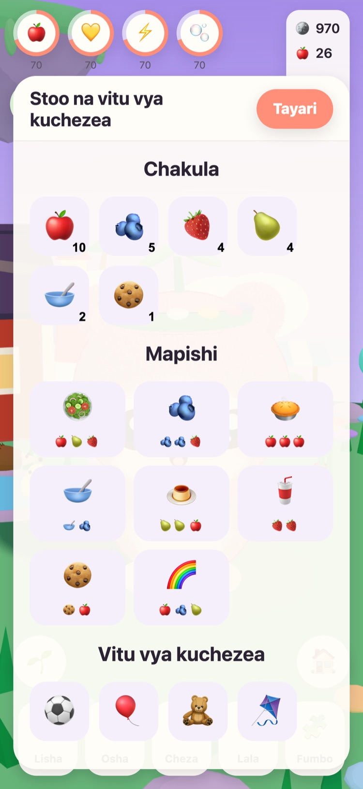
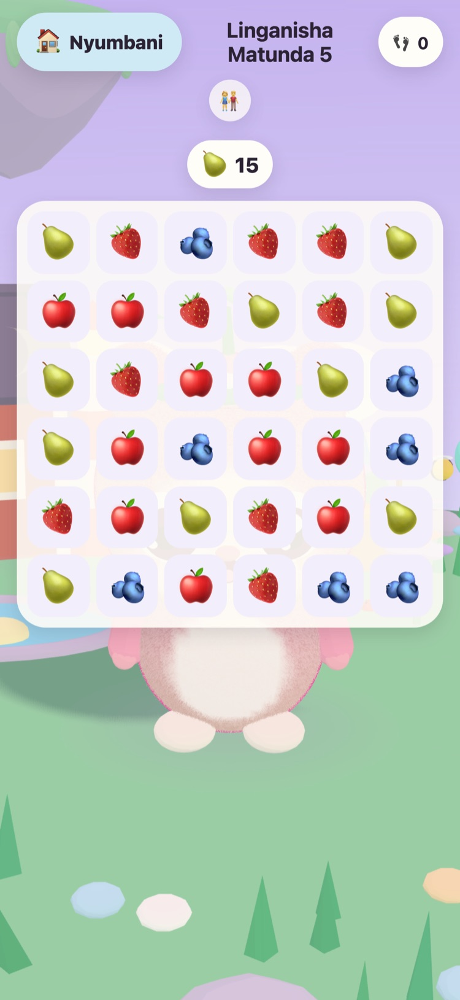
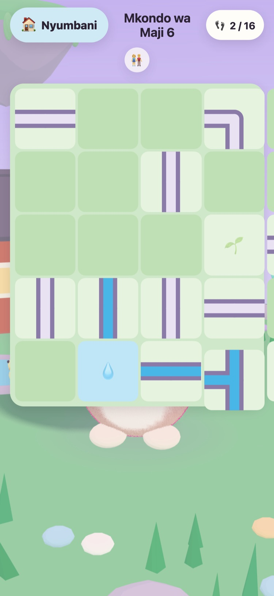
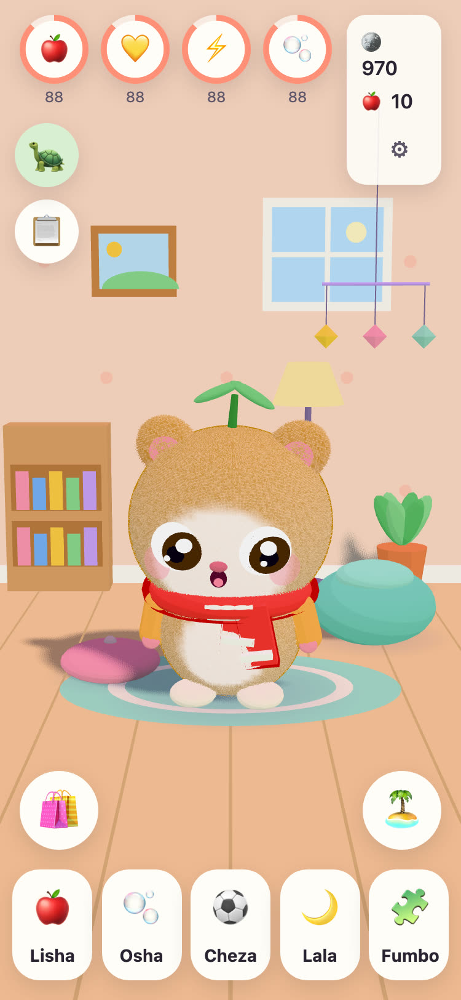
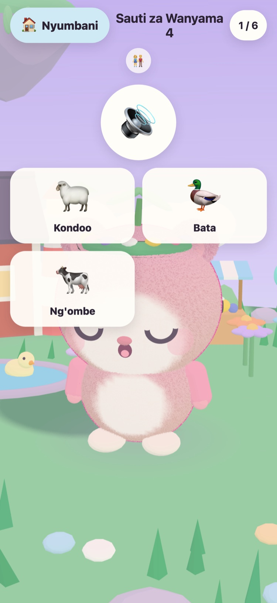

JUNOLittle Worlds
Angua Juno, mtunze, na utatue mafumbo ya upole yanayoamsha kisiwa kinachoelea. Mchezo tulivu kwa watoto wa miaka 6 hadi 10, kwenye iPhone na iPad.
Habari! Nimepata mayai matatu yenye joto. Lipi ni lako?
- Hakuna matangazo
- Hakuna ufuatiliaji
- Hakuna akaunti
- Hakuna vipima muda wala shinikizo






Rafiki mdogo wa kwake mwenyewe
Babu Tintin, kobe mzee anayetunza Kisiwa cha Mbuga, amepata mayai matatu yenye joto. Mtoto wako anachagua moja na kumpa jina yule anayeanguliwa. Tangu hapo Juno ni wake: kumlisha, kumwogesha, kucheza naye na kumlaza usingizi.
-
Chagua yai
Mayai matatu yenye joto, rangi tatu. Mtoto wako anachagua moja na kulitazama likianguliwa.
-
Mpe jina, mpende
Kulisha, kuogesha, kucheza na kulala. Juno anaonyesha jinsi anavyojisikia, na anakua kadiri urafiki wao unavyokua.
-
Amsha kisiwa
Kila nyota ya fumbo inarudisha mwanga kwenye Kisiwa cha Mbuga, hadi maua, nyuki na bata warudi nyumbani tena.
Lisha, ogesha, cheza, lala
Vyakula na vitu vya kuchezea vya aina mbalimbali, mapovu bafuni, na Juno anayeonyesha jinsi anavyojisikia. Mahitaji hupungua polepole na hayafiki sifuri kamwe, kwa hiyo Juno hapotei kamwe.
Mafumbo 57 ya upole
Linganisha Matunda, Bustani ya Kumbukumbu, na Sauti za Wanyama na Sauti za Magari zenye rekodi halisi. Nyota hutokana na hatua, kamwe si muda, na kujaribu tena ni bure kila wakati.
Kisiwa kinachoamka
Bustani ya Maua inafunguka pamoja na nyuki, Bwawa la Bata linajaa maji na bata, na mbegu zinakua kuwa matofaa na stroberi katika vitalu vya bustani.
Chumba cha kukifanya kiwe cha starehe
Sarafu kutoka kwenye mafumbo na kazi za kila siku hununua mapambo ya chumba cha Juno na nguo za kuvaa. Hakuna kitu katika duka la sarafu kinachogharimu pesa halisi.
Kusoma kwa sauti
Babu Tintin anasoma kila mstari kwa sauti yake mwenyewe yenye upendo, kwa ajili ya watoto ambao bado hawawezi kusoma. Mguse ili usikie tena.
Eneo la Wazazi
Nyuma ya kizuizi cha wazazi: lugha, kusoma kwa sauti, sauti, wakati wa kulala na kikumbusho cha upole cha kupumzika. Wakati wa kulala Juno analala, na mafumbo yanasubiri hadi asubuhi.
Unazungumza lugha 21
Babu Tintin anazungumza na mtoto wako kwa lugha yake mwenyewe. Chagua moja katika Eneo la Wazazi, au uache mchezo ufuate lugha ya kifaa.
English Svenska Dansk Norsk Suomi Deutsch Nederlands Français Español Italiano Português (Brasil) Polski Русский Ελληνικά Türkçe Bahasa Melayu Kiswahili हिन्दी 日本語 한국어 简体中文
Umetengenezwa na babu
JUNO ulitengenezwa Uswidi na babu kwa ajili ya mjukuu wake wa kike: mchezo ambao angefurahi kumwona akiucheza. Babu Tintin, kobe wa mchezoni, ni yeye mwenyewe.
Kwa hiyo sheria ni rahisi. Hakuna kinachoshinikiza, hakuna kinachodanganya, na hakuna kinachokusanya chochote kuhusu mtoto wako.
Bure, bila matangazo
JUNO ni bure kupakua na hauna matangazo, ufuatiliaji wala akaunti. Kila kitu anachofanya mtoto wako kinabaki kwenye kifaa chako. Tazama ukurasa wa faragha.
Mtu mzima anaweza kununua JUNO Plus au Kifurushi cha Majira ya Baridi katika Eneo la Wazazi, nyuma ya kizuizi cha wazazi. Vyote viwili ni ununuzi wa mara moja ambao unaweza kuurejesha na kuushiriki na familia yako.